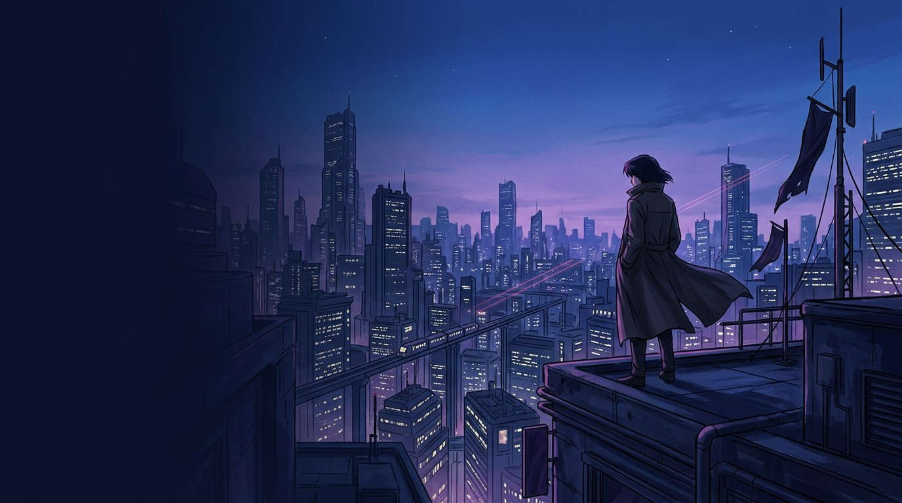

01 / ПЕРСОНАЖ
Желание
становится силой.
В «Коде Гиасс» способность персонажа может читаться как форма сокровенного желания — личное превращается в силу, меняющую систему.
Перейти к аниме-разборам ↗Авторский проект о том, как символы собираются в систему — в натальной карте, кино, аниме, мифах и человеческих историях.
Прокрути: визуальный фокус меняется вместе с темой — от аниме к кино и хоррору. Один авторский способ чтения, разные миры.

В «Коде Гиасс» способность персонажа может читаться как форма сокровенного желания — личное превращается в силу, меняющую систему.
Перейти к аниме-разборам ↗В мире Ридли Скотта технологии, жизнь и вытесненное складываются не в перечень тем, а в единую архитектуру.
Перейти к фильмам ↗Хоррор превращает табу, память и пороговые состояния в место, образ или существо, с которым приходится встретиться.
Перейти к хоррорам ↗Выбери рубрику — у каждой собственный цвет, темп и тип историй. Связи между ними остаются внутри одной авторской системы.
Жест, планета, реплика или решение художника — деталь становится входом в устройство целой истории.
Глубокий разбор натальной карты вокруг вашего вопроса. Подготовка, разговор и, если так лучше для материала, продолжение после паузы — когда новые вопросы уже успели сложиться.
Напиши, что именно хочется разобрать, — отвечу по формату и условиям.
Связаться ↗Контактная ссылка будет подключена перед запуском.Каналы для коротких заметок, анонсов и новых материалов.
Карта неба становится картой функций. В ядре — Солнце и Луна; на первой орбите — Меркурий, Венера и Марс; дальше — социальные и коллективные поля. Наведи курсор для короткой HUD-подсказки, нажми на планету для полной карточки и связанных материалов.
HUD: Наведи на планету или выбери её мышью / клавиатурой.
В заметках уже есть своя логика отношений между планетами. Выбери аспект — схема покажет короткую формулу.
Астролог и автор. Читаю символические системы — в натальной карте, мифе, кино и играх — и собираю отдельные детали в целостную интерпретацию.
Астрологией занимаюсь с 2011 года; консультирую с 2017–2018-го. В основе моего подхода — западная астрология, самостоятельное исследование, чтение и постоянная проверка собственных интерпретаций на материале карт и культурных историй.
Мне важно не выдать список значений, а понять, как элементы взаимодействуют: что именно они делают в этой конкретной системе и как объяснить это понятным языком.
Подготовка, интерпретация и живой диалог. Иногда материал лучше раскрывается в одной встрече, иногда — в двух с паузой, чтобы возникли новые вопросы.
Ссылки на Telegram, VK и запись подключаются перед публикацией сайта. Для финальной версии здесь будут реальные кнопки связи и актуальные условия консультации.